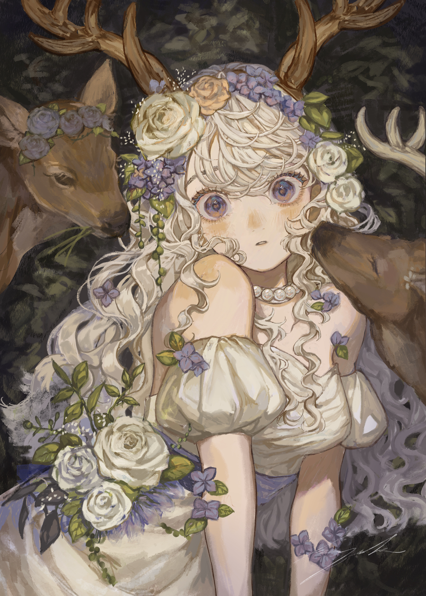

In traditional 2D art, I like oil paintings. specifically Romantic, Baroque and impressionism. I more enjoy narrative art or hiding information in a scene. In digital 2D art, I like anime-like characters with some kind of narrative. If not a narrative a facial expression that wrenches my emotions. recently I asked myself How well does a character concept art thrive without a story written for them? And I think it would best describe my likes in art in general.
Here is images (that are mostly not mine, only one image in this project is mine)I believe follow that but also follow what i like in general. Through this, I hope to understand my likes in art and goals to achieve. I will include some words to talk about what I like about a piece of art specifically.

pg18. img location.link
What I like about this image which I sourced from Shounen Jump is the chaos of food flying at this kid's face. The kid himself is so happy and this food hitting him, like throwing rotten tomatos at the actors and actresses after a play. Shitting on his happiness. And he also clearly has a head injury as well I'm curious if a bowl of food hit him previously to cause that head injury. What I don't particularly like in terms of art is how cartoonish the character is. Though as a full picture with a lot of rendering going towards the food, perhaps real is the food and his happiness is not. The contrast overall is astounding and I really love it. ------------
Previously I had contemplated the idea of contrast or juxtaposition in art. Wanting to put something beautiful and something so ugly next to it. Weaving those 2 together to create something I would call a person. My opinions on makeup and beauty plain to see.

This one is less of a painting, and more of the start of a concept... which is arguably what most of these will be. The image is of a ceiling fan with its fan arms slinking downward and its lightbulbs melting. This one reminds me of melting clocks or The Persistence of Memory but for a room. This is here, for the idea of a room whose objects are melting. And for the ambiance that this image gives. The room is dusty, maybe forgotten, theres a dusty sort of feeling in that room. I guess the idea of a space you inhabbit just melting around you and turning you into a messed up dumpling is just an interesting idea. If I were to continue this thought, I think I'd fill the room with stuff someone might have. And have them melt alongside the ceiling fan.
by artist 小夜子, here is the link to the specific piece link
Now the thing about this piece is its not here because its pretty, nor is it here for its' content. This sort of thing or style of art is something I've seen quite a bit, and its not in particular saying a lot for me. Theres no particular narrative that interests me. Now the name of the piece, is Rose, Deer, Wedding Dress / ☔️🌿 and in the description it says June bride. This image feels more like a display of skill. And for me that is what I like about it. I like the rendering of the hair being so incredibly rendered. Especially the bangs. I love the way the cloth is rendered, the shadows on top warmly colored, while the ones on the bottom colder. Until now I had only really studied direct sunlight on skin and in direct sunlight, the terminating line on skin is warmer than the rest of the shadow, here its reversed. I don't quite understand the science fo rthat but its lovely. The combination of colder colors and warmer colors, both of similar value to render the skin is an AMAZING concept and its executed wonderfully. Things I don't like would be particularly obvious. As mentioned earlier, this is a piece which showcases skill rather than a full on narrative which is what I like. Along with that, the deer aren't very well rendered. I'm also a bit uncertain, but are they even rendered in the same lighting? I guess that itself is a bit curious. But as the piece is more of a showcase of skill, I don't think they add to it, rather takeaway from it. The same can be said about the antlers.
Interactive web narrative main page link
Return to home pagehome